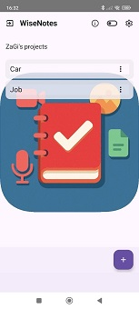
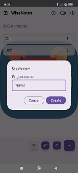
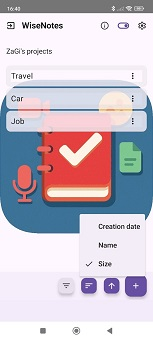
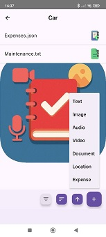
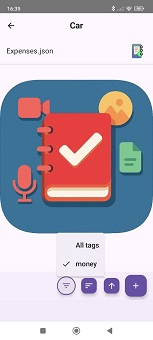

Organize your notes
into projects
Quickly and practically, even when you are on the go. Lightweight by design, powerful by purpose.
Download on Google PlayBuilt for people who are always moving
WiseNotes is designed for people who work or study on multiple projects and need to stay organized quickly, even while on the move.
No complex systems. Just practical organization.
Everything revolves around your projects
Create your projects and add all the notes you need. Files, multimedia content, and notes — all organized in a structured way.





Capture anything, anywhere
Notes can be created directly in the app or imported from your device, and shared individually or as an entire project.
Designed to stay out of your way
WiseNotes focuses on what matters: getting your idea captured fast and finding it again easily.
- Minimal UI — no clutter, no distractions
- Quick actions — few taps to add or share content
- Long tap on project or note name to manage tags
- Lightweight — works smoothly even on older devices
Your data, your way
Manage and transfer your content in a simple and flexible way.
Ready to get organized?
WiseNotes is available on Google Play. Free to try.